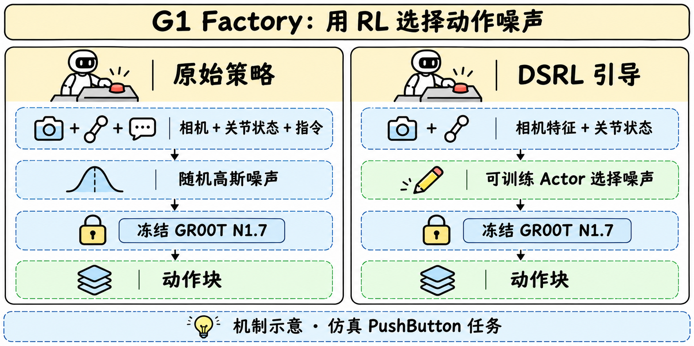

G1 Factory · 让冻结的机器人策略学会选择噪声
定位与两个检查点
一句话 把机器人 embodiment 适配与冻结策略的 RL 引导放在一个研读节点中比较。
| 检查点 | 参数与作用 | 相互关系 |
|---|---|---|
| G1-Factory-GR00T-1.7 | 3,144,016,000 参数，九项任务微调 VLA | 基于 GR00T N1.7，提供动作生成器 |
| Isaac-RLPT-GR00T-1.7-G1-Factory-PushButton-DSRL | steering actor 为 6,442,182 参数 | 选择初始噪声，依赖冻结的上述 G1 策略 |
这里的一张图像、31 维上半身状态和英文指令共同决定一块动作。图像是头部相机原生 640×480 RGB，31 维依次包含双臂、双手及腰部。输出是一块 40×35 的连续动作，其中 31 维对应上半身关节目标，另有 1 维底盘高度和 3 维导航指令，由单独全身控制器产生腿部动作。
方法与训练
一句话 微调负责学到工厂动作分布，RL actor 在这个已学分布中选择更有利的起点。

从通用 VLA 到 G1 Factory
官方架构是 Cosmos-Reason2-2B 视觉语言骨干、4 层视觉语言 self-attention 模块和 32 层 Flow Matching 动作 Transformer，动作头执行 4 个去噪步。微调时冻结语言骨干，更新视觉编码器、projector 与动作头。

图来自上游通用 GR00T 模型卡，用于解释骨干。它未独立展示本次 G1 Factory 微调的全部实现细节。
九项任务共 900 条遥操作示范，每项 100 条，约 40 万帧，按 50 Hz 记录。微调为 20,000 步、8 GPU、全局 batch 32，AdamW 学习率 1e−4、cosine 调度、5% warm-up、weight decay 1e−5、state dropout 0.2、seed 42。模型卡给出这些设置，数据卡访问失败使本次无法逐轨迹审查质量与任务覆盖。
DSRL 怎样改变动作
普通扩散动作策略从高斯噪声出发去噪。DSRL 训练一个独立 Transformer actor，输入 31 维关节状态和相机的 768 维 DINOv2 特征，输出限制在 [−2,2] 的 40×35 噪声。冻结的 VLA 从该噪声生成动作，所以 RL 的控制变量是动作分布的潜起点。
训练采用 SAC 和 Transformer critic ensemble。actor 在推理时工作，critic 与优化器保存在 learner state 中用于训练恢复。关键约束是训练与评测使用相同噪声边界，否则每个 steering action 都会被重新缩放。
| RL 设置 | 官方记录 |
|---|---|
| 任务与奖励 | 单场景 PushButton，成功 1，其他 0 |
| 训练预算 | 80,000 环境步计划，发布 checkpoint 位于 72,488 步 |
| 体验量 | manifest 记录 253 个 episode、9,114 个已完成 rollout |
| 初始化与探索 | actor 均值 0、log std −0.46，warm-up 用高斯 latent |
| 正则与熵 | 熵系数固定 0.05，Gaussian prior std 0.63 的 KL 正则 |
| 每次决定 | 40 个 latent，seed 0 |
这说明代码、数据、训练环境与解码配置必须一起固定。仅替换 actor 权重，未必能还原原先的闭环动作分布。
评测与可支持的结论
一句话 九任务基线与 300 episode 的 steering 对照使用两套评测协议，应分别阅读。
| 九任务官方基线，每任务 100 episode | 成功率 |
|---|---|
| BoxLift | 98% |
| BoxLiftFloor | 96% |
| BoxTableToShelfPnP | 77% |
| DrillLift | 66% |
| DrillLiftObs | 75% |
| DrillPnP | 69% |
| PickDrillFromHolder | 44% |
| PushButton | 42% |
| PushShelfForward | 58% |
| 平均 | 69.4% |
上述基线使用 CPU physics，每条 episode 最多 20 秒。DSRL 的配对对照另用 Isaac Sim 6.2 / Isaac Lab 3.0，逐场景运行同一批 300 个 held-out episode，种子为 5050–5199 和 6000–6149。达到按键成功条件或 1,000 步（20 秒）上限后结束。
| 相同 300 episode、相同评测器 | 成功数 | 成功率 |
|---|---|---|
| 冻结 G1 策略 | 184 / 300 | 61.3% |
| 冻结 G1 策略加 DSRL actor | 246 / 300 | 82.0% |
绝对提升为 20.7 个百分点。模型卡给出的差值 95% 区间约为 +13.9 至 +27.4 个百分点，但缺少逐 episode 配对结果，无法独立验证配对不确定性。300 次对照中的 61.3% 才是这一实验对应的基线。
训练中的 checkpoint 按 17 次评估中最佳的一次选择，当时是 20 个 episode 中成功 13 个。独立 300 次 held-out 评测减少了直接在选择集合上报分的问题，仍需要多训练种子和不同场景对照来判断稳定性。
复现与研究启发
一句话 先控制 embodiment、相机、归一化与评测种子，再比较潜噪声引导的收益。
- 固定 G1 baseline 与 steering checkpoint 的 SHA256SUMS，保留处理器、归一化统计和 embodiment mapping。
- 使用原生 640×480 相机输入、相同噪声界限与 task instruction。基线和 steering 用相同 held-out seeds，保存逐 episode 结果及超时原因。
- 在相同环境步预算下，对比随机 latent、无 KL 引导和官方 SAC+KL。逐步扩大训练种子与场景范围，并检查其余八项任务是否受损。
- 单 L40/L40S、48GB 显存可同时运行模拟器和策略，官方参考 50 episode 约 45 分钟。这是其软件栈上的运行提示，本次没有计时复测。
来源与未核实范围
一句话 两份官方模型卡是本次 G1 微调与 DSRL 实验的直接证据，关联论文解释上游方法。
- HF Model Card · G1 微调策略
- HF Model Card · DSRL steering
- 上游 GR00T N1.7
- 关联 Tech Report · DSRL · 关联 Tech Report · GR00T N1
- 本地原始模型卡 · steering 原卡 · 归档清单
尚缺 10 月 19 日已公开下载的历史证明、可读的 G1 Factory 源工程与训练数据，以及本次 checkpoint 的独立技术报告。已有来源足以展开训练与协议分析，不能据此宣称完成从头复现。
📊 相关可视化 G1 Factory 中文 Poster